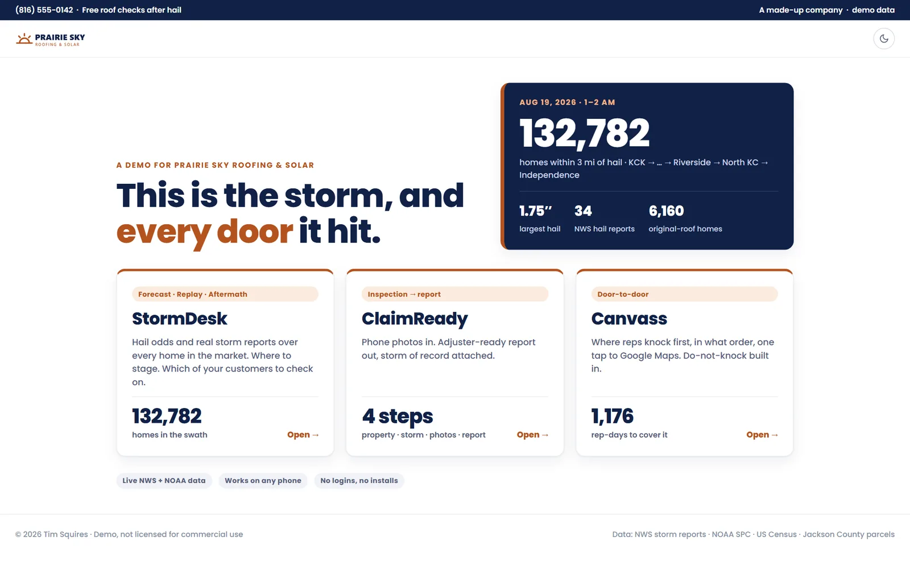
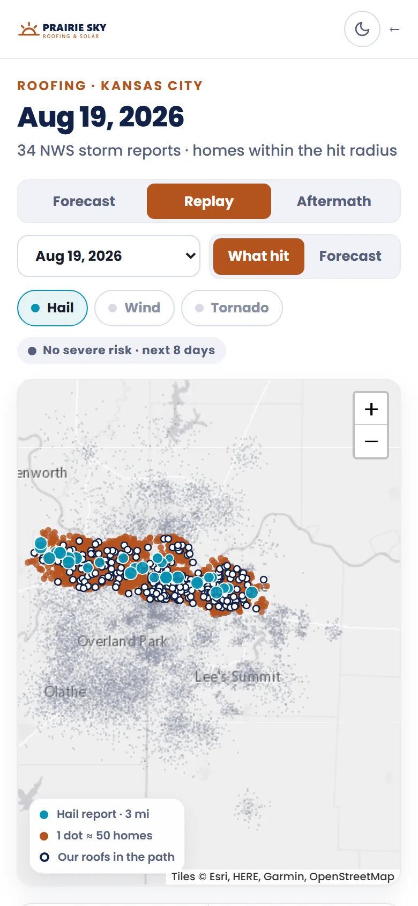
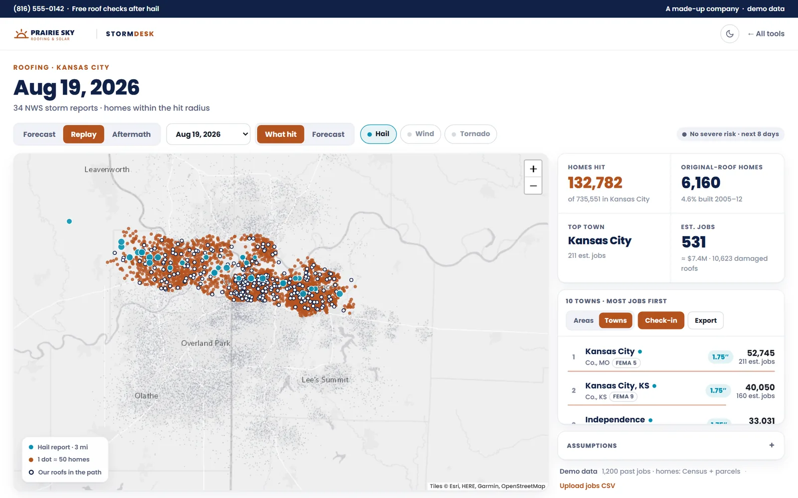
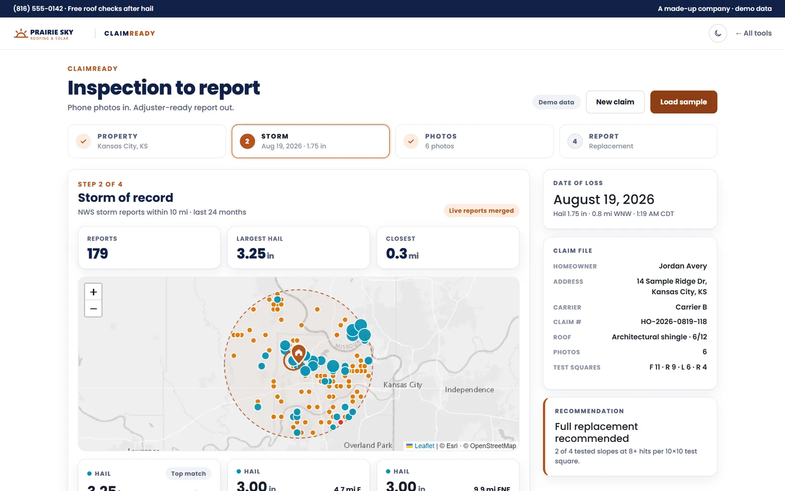
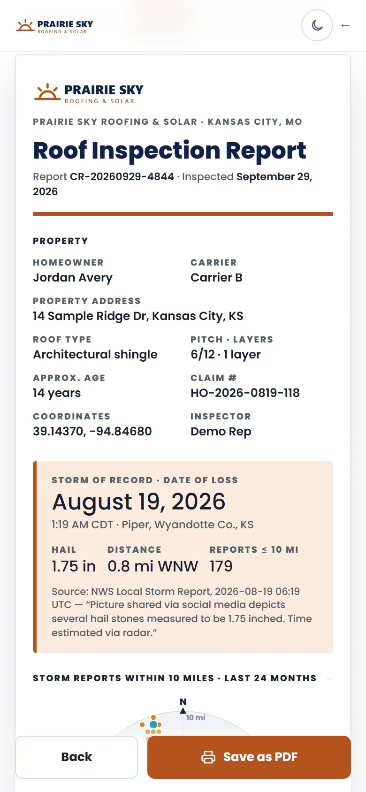
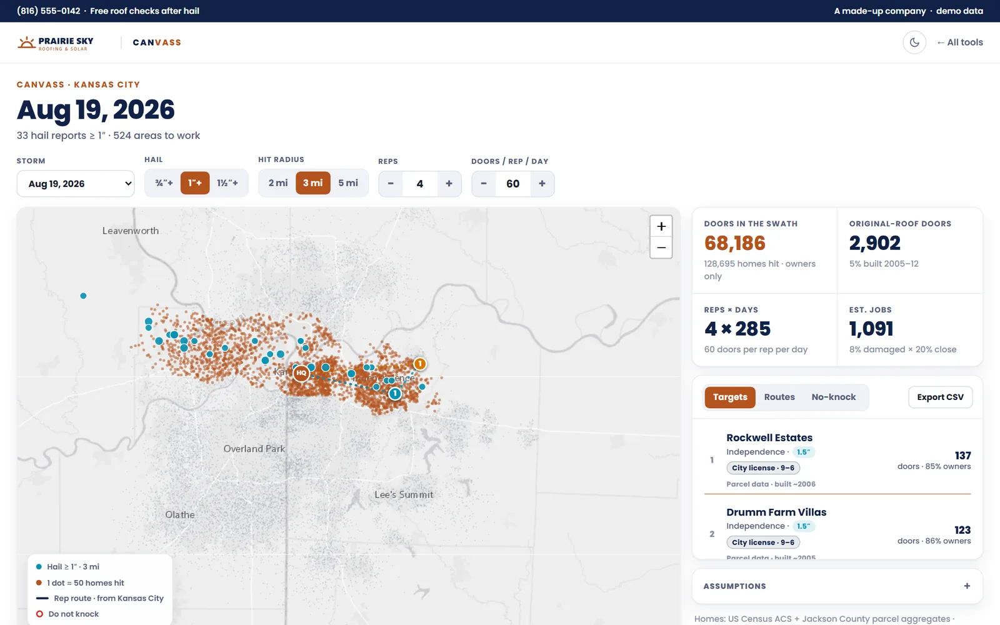
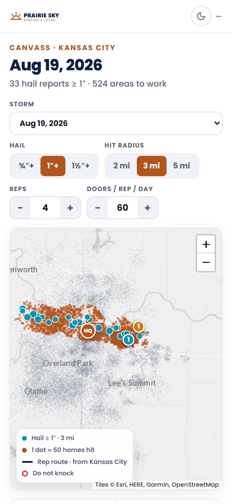

The morning after a hailstorm, on one screen.
After a hailstorm, a roofing company has a few busy days to answer three questions. Where did it hit? Whose roofs are under it? And can we show the insurance company proof? These three tools answer all three from free public weather data. They run on any phone from a link, with nothing to install.


Prairie Sky Roofing & Solar is made up. It's the same pretend roofer from the Business System page. The storm is real: 19 August 2026, hail up to 1¾ inches across the Kansas City metro. Customers, names and addresses are invented.

Where it hit, and how many homes
StormDesk replays the night. Every hail report the National Weather Service logged is drawn over every home in the market, one dot for about 50 homes. It counts the homes inside the hail, flags the ones old enough to still have their original roof, and ranks the towns by likely jobs, so the crew knows where to set up first.
It works before a storm, too. Forecast shows the government's severe-weather outlook for the week ahead, and Replay puts any past forecast next to what actually fell.
The company's own past customers light up on the map. One tap drafts a personal check-in text for each of them.

The storm of record, found for you
An insurance claim needs a date of loss and proof that hail actually fell there. Give ClaimReady the address and it gathers every storm report within 10 miles from the last two years, then picks the closest hail on the likely night. For this made-up house, that's a 1.75-inch report less than a mile away.

Phone photos in, a clean report out
On the roof, the inspector photographs a test square on each slope and counts the hail hits. ClaimReady turns that into a report an adjuster can read in a minute: the property, the storm of record with its source, the photo evidence, and a plain recommendation. It prints, or saves as a PDF.
The recommendation follows a stated rule rather than a hunch: replace when two or more slopes show 8 or more hits in their test square. The inspector can always overrule it, and the report says when they did.


Where to knock first
Canvass plans the door-knocking. Set the hail size, the radius and the size of the crew, and it works out how many doors there are, how many days the crew needs, and which neighborhoods to start with. It counts owner-occupied homes only, because owners are the ones who decide on a roof.
Where a city requires a canvassing license, the area shows it along with the hours knocking is allowed. A do-not-knock list is built in, and every route opens in Google Maps with one tap.
Under the hood
- Plain HTML and JavaScript, no server. Each tool is a single page that runs on the phone itself, so it works from a texted link with no accounts and nothing to install.
- Free public data only: National Weather Service storm reports (by way of the Iowa Environmental Mesonet), the Storm Prediction Center's outlooks, FEMA disaster declarations, US Census housing counts, and county parcel records. The latest reports are merged in live on top of a prepared history.
- Homes are counted in groups, never one by one. Parcel records are rolled up to neighborhoods of at least ten homes, and map points are rounded to about a city block. No homeowner's name or single address ever reaches the page.
- "Original roof" is a stated rule of thumb. A home built between 2005 and 2012 has probably never been re-roofed, so it's the likeliest to need one after a storm.
- Every estimate shows its assumptions. Jobs come from open numbers a manager can change, like the share of roofs damaged and the close rate, instead of a black box.
- Maps are Leaflet on free basemap tiles. The same pages switch to another market by changing one setting.
Estimates, shown as estimates. A storm report is one person's measurement at one spot, and hail is patchy. So the tools count homes near reports and say how near, and they keep the assumptions behind every job estimate out in the open, where a manager can see them and change them.
Could this work for you?
Any business that moves when the weather does has the same bones: where it hit, who's affected, proof for the insurer, and a plan for the crew. Roofers, gutter and siding crews, tree services, restoration companies, and the agents who insure the homes they work on.